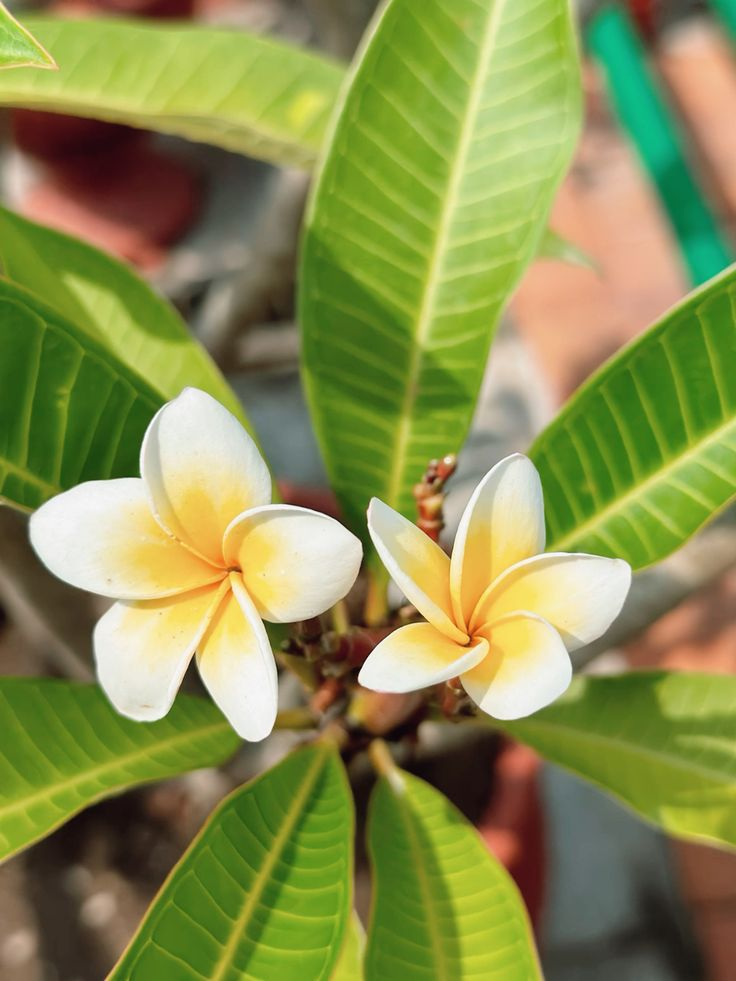
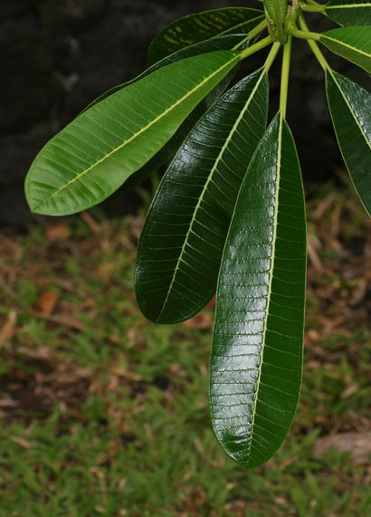
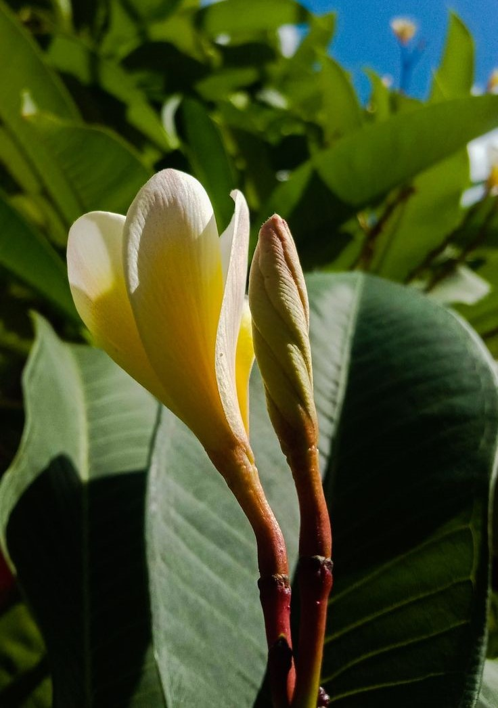

Singapore Graveyard Flower (Plumeria obtusa)

General Information
Scientific Name: Plumeria obtusa
Family: Apocynaceae
Type: Small tropical tree
Height: 10–25 ft tall
Uses:
- Ornamental: Grown for its fragrant white flowers and glossy foliage.
- Cultural: Used in leis, garlands, and religious offerings in Southeast Asia.
- Aesthetic: Common in tropical gardens and heritage sites.
Medicinal & Traditional Uses:
- Latex used externally for minor skin ailments.
- Some antibacterial properties documented.
- Warning: All parts mildly toxic if ingested.


Description
A lush evergreen tree with dark green leathery leaves and clusters of fragrant white flowers with yellow centers. Known as the graveyard flower due to its common use in cemeteries across Singapore.
Habitat & Growth
- Native To: Puerto Rico, but extensively cultivated in tropical Asia
- Soil: Prefers well-draining loamy soil
- Sun: Full sun to partial shade
- Watering: Moderate; drought-tolerant once established
Propagation
Easily propagated from stem cuttings taken during its dormant season. Cuttings root quickly in warm, moist conditions.
Fun Facts
- Called “graveyard flower” because its blooms often adorn graves in Singapore.
- Flowers are strongly fragrant at night, attracting moths.
- Also known as “Frangipani” and “Kampong flower.”